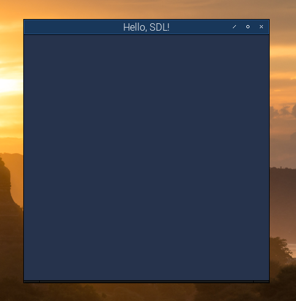

We start by installing the required dependencies for OpenGL ES programming. Since we will be using SDL2 for dealing with the underlying GUI, we will also install all the SDL2 related stuff. On the Pi OS, we will install these dependencies by opening a terminal window and issuing the following commands:
sudo apt update
sudo apt install libglfw3-dev libsdl2-dev libglm-dev mesa-utils libglew-dev
libsdl2-image-dev
Once you have the dependencies installed, you want to create somewhere on your drive a folder for the tutorial. You could do this:
mkdir -p OpenGL-Tutorial/Lesson-1
cd OpenGL-Tutorial/Lesson-1
You can view the complete code on my GitHub repo here. Copy over the relevant files from the Lesson-1 folder, or simply git clone the entire repo, whatever works best for you.
Once you have the files copied over to the Lesson-1 folder, simply run the make command to compile, link and create the executable file lesson-1 :
make
./lesson-1
Running the program, you should see a bare bones window on the screen:
At some point I am going to explain how the code works. The code itself is self explanatory if you know C++. You can move on to Lesson-2 by clicking here